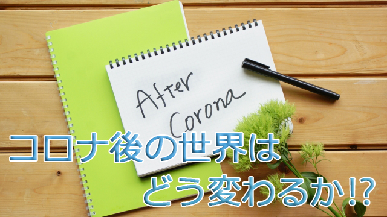

コロナ禍もようやく沈静の兆しが見え始めましたが、まだまだ第2波の到来に気をつけなければなりませんね。スペイン風邪のときも第2、第3波のほうが何倍も被害が大きかったと記録があります。
ところで以前から言っていますが、今回の世界的なパンデミックは人々に大きな影響を与えることは必至と思います。
社会のあり方、働き方だけでなく人々の心のあり方すなわち人生観―死生観―、あらゆる価値観がゆらぐことは容易に想像できます。
今まで当り前だと信じていたことが、実は本当はそうでもなかったとか、この機会に新しい生き方に目覚める人も出てくるでしょう。大きな被害や崩壊を目にすると私たちは、それを悲劇や絶望と捉えがちですが、中世のペストがその後のルネッサンスにつながり、近世のやはりペスト流行が産業革命を生んだりと、大災の後に来るものは必ずしも悪いことばかりではなく思わぬ進歩や大躍進のきっかけとなることもあるのです。
今回のコロナもそのような視点で見ると、何か来たるべき新時代の幕開けと言えるのかも知れません。
例えは悪いかも知れませんが、我が国においても第2次大戦で無残に敗北し国土は焦土と化し、あらゆる社会経済システムは完ぷなきまでも破壊されましたが、そのことが後の高度経済成長につながりまたたく間に世界で有数の豊かな国に生まれ変わったことは記憶に新しいところです。
今回のコロナでは何が変わるのでしょう。
絶対的な予測は難しいです。
ただこれだけは言えます。大きな変化が起こるのは間違いないが、それは大別して次の2点ではないかと思うのです。
１つは、すでに変化しつつあったものがそのスピードを加速するだろうということ。
2つめは全く新しい変化です。
今回の動画ではこれら2つの変化について私なりの考えを述べてみました。よろしければ参考にして下さい。
動画といえば、セミナーの代わりに始めたものがついダラダラ(笑)と続いてしまいました。動画作成は今回でいったん終了して、コロナ沈静化に伴いそろそろ本業（？）の方に戻ろうと思います。これまでおつき合い頂いた皆様には感謝致します。ありがとうございました。
その本業のセミナーですが、7月26日に予定しております。お時間ある方は是非お越しください。
尚ブログは相変わらず不定期でダラダラ(笑)続けるつもりですのでよろしくお願い致します。